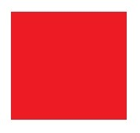
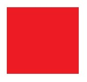
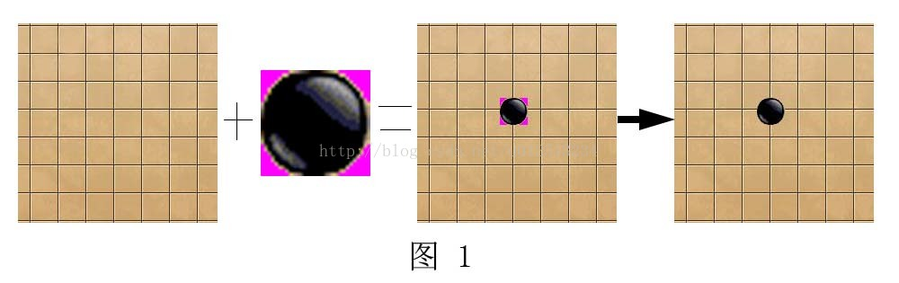
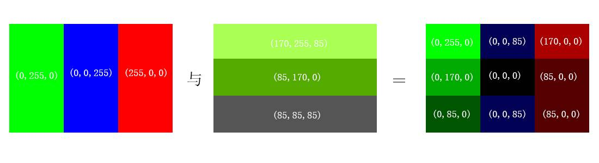

BitBlt（）用法
在VC中显示位图常用取BitBlt（）方法，它是将一幅位图从一个设备场景复制到另一个。源和目标DC相互间必须兼容。
虽然此方法的功能是这样的，但是我一直没有理解网上一些例子代码，不知道其用到的各DC和位图如何得到，及它们之间的关系。
今天工作中要将一些位图显示到窗口中，所以重要学习了一下。
我已经将要用的位图导入到工程资源中，所以我可以用：
CBitmap cbmp;
cbmp.LoadBitmap(IDB_BMP1);
这样得到一个CBitmap对象。
然后：
BITMAP bitmap;
cbmp.GetBitmap(&bitmap);
这样得到一个BITMAP对象，之所以要得到此对象是因为从其中可以得到位图的大小数据。
然后计算得到要在什么位置显示此位图（可以放在一个CRect rect;对象中）。
然后显示此位图，这是最重要的一步：
CDC dcMemory;
dcMemory.CreateCompatibleDC(pDC);
hOldBitmap = dcMemory.SelectObject(&cbmp);
pDC->BitBlt(rect.left,
rect.top,
bitmap.bmWidth,
bitmap.bmHeight,
&dcMemory,
0,0,
SRCCOPY);
其中pDC是一个CDC*，是将要在其中显示位图的设备环境。
这样位图就已经显示出来了，但是还要释放资源：
cbmp.DeleteObject();
dcMemory.SelectObject(hOldBitmap);
dcMemory.DeleteDC();
其中，要将临时设备环境选择入初始时位图，否则将不能正确释放！！
总结：
要在一个设备环境中显示位图，不能直接在上面“画”（目前我是我么觉得的），需要创建一个与之相兼容的新设备环境然后将位图选择入些新设备环境，然后再从些新设备环境中拷备位图以显示到正确的设备环境中。而选入这个动作相当与已经将位图“画在了临时设备环境中”（实际上并没有画，否则就可以直接选入要画图的CDC了），而且选入后位图在临时设备环境中的位置是左上角！
使用BitBlt实现位图背景透明
我们先看一下BitBlt这个函数的原型：
BOOL BitBlt(intx,int y, int nWidth,nHeight, CDC* PsrcDC, int xSrc, int ySrc, DWORD dwRop);
参数介绍：
int x 表示绘制位图目标左上角x坐标；
int y 表示绘制位图目标左上角y坐标；
int nWidth 表示绘制位图目标的区域宽度；
int nHeight 表示绘制位图目标的区域高度；
CDC* pSrcDC 表示存储源位图的设备描述表；
int xSrc 表示源位图的左上角x坐标；
int ySrc 表示源位图的左上角y坐标；
DWORD dwRop 表示栅格运算标志；
dwRop的取值与值的描述如下表所示：
| 值 | 描述 |
| BLACKNESS | 用调色板中索引为0的颜色(默认是黑色)填充目标矩形。 |
| CAPTUREBLT | 用调色板中索引为0的颜色(默认是黑色)填充目标矩形。 |
| DSTINVERT | 将目标矩形反色。 |
| MERGECOPY | 将源矩形中的颜色与当前目标设备环境选中的画刷通过逻辑与操作进行混合。 |
| MERGEPAINT | 将源矩形的颜色反色后与目标矩形的颜色通过逻辑或操作进行混合。 |
| NOMIRRORBITMAP | 防止位图镜像翻转。 |
| NOTSRCCOPY | 源矩形反色复制到目标矩形。 |
| NOTSRCERASE | 将源矩形与目标矩形的颜色通过逻辑或操作混合后，再反色。 |
| PATCOPY | 将目标设备环境选中的画刷复制到目标位图。 |
| PATINVERT | 将目标设备环境选中的画刷与目标矩形中的颜色进行逻辑异或操作，复制到目标位图。 |
| PATPAINT | 将目标设备环境选中的画刷与源矩形中的颜色的反色进行逻辑或操作，其结果再与目标矩形的颜色进行逻辑或操作。 |
| SRCAND | 将源矩形与目标矩形的颜色进行逻辑与操作。 |
| SRCCOPY | 直接将源矩形拷贝到目标矩形，最常用的绘制位图属性。 |
| SRCERASE | 将目标矩形的反色与源矩形的颜色进行逻辑与操作。 |
| SRCINVERT | 将源矩形的颜色与目标矩形进行逻辑异或操作。 |
| SRCPAINT | 将源矩形的颜色与目标矩形进行逻辑或操作。 |
| WHITENESS | 用调色板中索引为1的颜色(默认是白色)填充目标矩形。 |
下面是整个实现过程：
1)创建一张大小与需要绘制图像相同的位图作为“掩码”位图(maskBmp)；
2)将新创建的“掩码”位图存储至掩码位图的设备描述表(maskDC)中；
3)把内存设备描述表（memDC）的背景设置成“透明色”(SetBkColor(RGB(?, ?, ?)))，即不需要显示的颜色；
4)复制粘贴位图到“掩码”位图的设备描述表中，这个时候“掩码”位图设备描述表中存放的位图与位图设备描述表中的位图一样 (maskDC.BitBlt(……)),此时会进行掩码运算，体现掩码特性，即：与设置的背景设相同的为体现出白色，不同的体现出黑色。（下面会详细说明过程）。
5)将内存DC里的图片与实际窗口背景颜色（设为白色）做逻辑异或（关键词：SRCINVERT）操作并在实际窗口中呈像；
6)将掩码DC的图与实际窗口背景颜色做逻辑与（关键字：SRCAND）操作，并在窗口中呈像；
7)重复第五步。
下面进行演示：
首先我们要贴上的图片是如下的一张图（即黑色背景红色方块）：

我们要将它的背景透明(其实是变成与背景色相同的颜色)，然后显示在窗口上。
说明：
图片宽度定义为 const int BMPWIDTH = 182,
高度定义为 const int BMPHEIGHT =172;
第一步：创建一张掩码图，代码如下：
CBitmap maskBmp;
maskBmp.CreateBitmap(BMPWIDTH, BMPHEIGHT, 1, 1,NULL);
CreateBitmap函数说明：
参数1 nWidth： 指定位图宽度、单位为像素。
参数2 nHeight： 指定位图高度、单位为像素。
参数3 CPlanes： 指定该设备使用的颜色位面数目。
参数4 CBitsPerPel： 指定用来区分单个像素点颜色的位数（比特数目）。
参数5 LpvBits： 指向颜色数据数组指针。这些颜色数据用来设置矩形区域内像素的颜色。矩形区域中的每一扫描线必须是双字节的整数倍（不足部分以0填充）。如果该参数为NULL，将不对新生成的位图进行初始化。
第二步：将创建的掩码位图选进掩码位图的设备描述表中
如下：
CDC maskDC; // 定义掩码DC maskDC.CreateCompatibleDC(NULL); // 初始化设备DC CBitmap *oldMaskBmp = maskDC.SelectObject(&maskBmp);
第三步：将内存设备描述表的背景色设置为透明色（即要实现透明的背景色，如本例子为黑色）
CBitmap bmpSquare; // 定义一个CBitmap对象存储将要绘制的图(ID为IDC_SQUARE) bmpSquare.LoadBitmap(IDC_SQUARE); // 加载位图 CDC memDC; // 创建内存DC memDC.CreateCompatibleDC(NULL); // 初始化DC CBitmap *oldMemBmp = memDC.SelectObject(&bmpSquare); // 将位图存入内存DC中,并返回旧的位图 memDC.SetBkColor(RGB(0,0,0));
第四步：将内存DC的位图在掩码DC中呈像
maskDC.BitBlt(0, 0, BMPWIDTH, BMPHEIGHT, &memDC, 0,0, SRCCOPY);
说明：
memDC中图为(黑色底红色方块): + memDC背景色(全黑): = 掩码计算后(白色底黑色方块):
现在maskDC中的图即为： （白底黑方块）
第五步：将内存DC里的图片与实际窗口背景颜色（设为白色）做逻辑异或（关键词：SRCINVERT）操作并在实际窗口中呈像；如下：
CPanitDC dc(this); //窗口DC
dc.BitBlt(0, 0, BMPWIDTH, BMPHEIGHT, &memDC, 0, 0,SRCINVERT);
说明：
memDC中图为（黑色底红色方块） ：+窗口背景色（全白）
：+窗口背景色（全白） ：=异或操作后（白底蓝绿色方块）：
：=异或操作后（白底蓝绿色方块）： .
.
逻辑说明：
memDC背景（黑）其RGB为： 0 0 0 0 0 0 0 0，0 0 0 0 0 0 0 0，0 0 0 0 0 0 0 0 窗口背景（白）为： 1 1 1 1 1 1 1 1，1 1 1 1 1 1 1 1，1 1 1 1 1 1 1 1 异或操作（相同为0不同为1）： 1 1 1 1 1 1 1 1，1 1 1 1 1 1 1 1，1 1 1 1 1 1 1 1（白色） ------------------------------------------------------ memDC方块（红）为： 1 1 1 1 1 1 1 1，0 0 0 0 0 0 0 0，0 0 0 0 0 0 0 0 窗口背景（白）为： 1 1 1 1 1 1 1 1，1 1 1 1 1 1 1 1，1 1 1 1 1 1 1 1 异或操作结果： 0 0 0 0 0 0 0 0，1 1 1 1 1 1 1 1，1 1 1 1 1 1 1 1（蓝绿色）
第六步：将掩码DC的图与实际窗口背景颜色做逻辑与（关键字：SRCAND）操作，并在窗口中呈像；如下：
dc.BitBlt(0, 0, BMPWIDTH, BMPHEIGHT, &maskDC, 0, 0,SRCAND);
说明：
maskDC中图为（白底黑方块）： + 窗口背景色（白底蓝绿色方块）：
+ 窗口背景色（白底蓝绿色方块）： = 异或操作后（白底黑方块）：
= 异或操作后（白底黑方块）： .
.
此时在绘图区域的背景图为（白色背景黑色方块）
逻辑说明：
maskDC背景（白）其RGB为： 1 1 1 1 1 1 1 1，1 1 1 1 1 1 1 1，1 1 1 1 1 1 1 1 窗口背景（白）为： 1 1 1 1 1 1 1 1，1 1 1 1 1 1 1 1，1 1 1 1 1 1 1 1 与操作（1，1为1，其他为0）： 1 1 1 1 1 1 1 1，1 1 1 1 1 1 1 1，1 1 1 1 1 1 1 1（白色） --------------------------------------------------------------- maskDC方块（黑）为： 0 0 0 0 0 0 0 0，0 0 0 0 0 0 0 0，0 0 0 0 0 0 0 0 窗口背景（蓝绿）为： 0 0 0 0 0 0 0 0，1 1 1 1 1 1 1 1，1 1 1 1 1 1 1 1 逻辑与操作结果： 0 0 0 0 0 0 0 0，0 0 0 0 0 0 0 0，0 0 0 0 0 0 0 0（黑色）
第七步：也是最后一步，重复第五步，也就是将内存DC里的图片与实际窗口背景颜色（设为白色）做逻辑异或（关键词：SRCINVERT）操作并在实际窗口中呈像；如下：
dc.BitBlt(0, 0, BMPWIDTH, BMPHEIGHT, &memDC, 0, 0,SRCINVERT);
说明：
memDC中图为（黑底红方块） ：+窗口背景色（白底黑方块）：
：+窗口背景色（白底黑方块）： = 异或操作后（白底红方块）：.
= 异或操作后（白底红方块）：.
逻辑说明：
memDC背景（黑）其RGB为： 0 0 0 0 0 0 0 0，0 0 0 0 0 0 0 0，0 0 0 0 0 0 0 0 窗口背景（白）为： 1 1 1 1 1 1 1 1，1 1 1 1 1 1 1 1，1 1 1 1 1 1 1 1 异或操作（相同为0不同为1）： 1 1 1 1 1 1 1 1，1 1 1 1 1 1 1 1，1 1 1 1 1 1 1 1（白色） ------------------------------------------------------------------------ memDC方块（红）为： 1 1 1 1 1 1 1 1，0 0 0 0 0 0 0 0，0 0 0 0 0 0 0 0 窗口背景（黑）为： 0 0 0 0 0 0 0 0，0 0 0 0 0 0 0 0，0 0 0 0 0 0 0 0 异或操作结果： 1 1 1 1 1 1 1 1，0 0 0 0 0 0 0 0，0 0 0 0 0 0 0 0（红色）1
此时的方块背景色白色即与整个窗口背景色相同，也就是说我们实现了透明显示位图哈。
最后，别忘记把改释放的资源释放！
如：
maskDC.SelectObject(oldMaskBmp);
memDC.SelectObject(oldMemBmp);
memDC.DeleteDC();
BitBlt画透明位图
CDC::BitBlt函数，应用在GDI的绘图中，有时候我们需要显示的位图有一部分是透明的，例如在棋类游戏中，棋盘图片和棋子图片融合的时候，棋子边缘应该是透明。
在图1中，棋盘和棋子图片融合在一起，需要设置棋子图片边缘的“品红色”为透明。
BitBlt函数说明：
BOOL BitBlt( int x, int y, int nWidth, int nHeight, CDC* pSrcDC, int xSrc, int ySrc, DWORD dwRop );
CSDN中关于bitblt函数的说明：Copies a bitmap from the source device context to this current device context. 将源设备上下文中一个位图，拷贝到当前设备上下文中。其中x,y是当前设备上下文的绘图位置，nWidth和nHeight是位图大小，xSrc和ySrc是源设备上下文的位图位置。dwRop 是源位图和当前位图的运算方式，下面是其取值
BLACKNESS 用黑色填充目标矩形区域.
DSTINVERT 将目标矩形图象进行反相.
MERGECOPY 将源矩形图象与指定的图案刷(Pattern)进行布尔"与"运算.
MERGEPAINT 将源矩形图形经过反相后，与目标矩形图象进行布尔"或"运算.
NOTSRCCOPY 将源矩形图象经过反相后，复制到目标矩形上.
NOTSRCERASE 先将源矩形图象与目标矩形图象进行布尔"或"运算，然后再将得图象进行反相.
PATCOPY 将指定的图案刷复制到目标矩形上.
PATINVERT 将指定的图案刷与目标矩形图象进行布尔"异或"运算.
PATPAINT 先将源矩形图象进行反相，与指定的图案刷进行布尔"或"运算，
再与目标矩形图象进行布尔"或"运算
SRCAND 将源矩形图象与目标矩形图象进行布尔"与"运算.
SRCCOPY 将源矩形图象直接复制到目标矩形上.
SRCERASE 将目标矩形图象进行反相，再与源矩形图象进行布尔"与"运算.
SRCINVERT 将源矩形图象与目标矩形图象进行布尔"异或"运算.
SRCPAINT 将源矩形图象与目标矩形图象进行布尔"或"运算.
WHITENESS 用白色填充目标矩形区域.
下面举例说明 位图的运算方式，两个位图按照对应像素 按位运算 例如像素（R1，G1，B1）和（R2，G2，B2）采用SRCAND “与”运算，则结果为（R1&R2，G1&G2，B1&B2）。
测试：建立MFC单文档，在资源中添加BITMAP资源IDB_BITMAP1，IDB_BITMAP2,在view类的OnDraw中，添加以下代码：
void CXXXXXXXXView::OnDraw(CDC* pDC)
{
CceshiTransparentDoc* pDoc = GetDocument();
ASSERT_VALID(pDoc);
if (!pDoc)
return;
// TODO: 在此处为本机数据添加绘制代码
// 图片1
CBitmap bitmap1;
bitmap1.LoadBitmap(IDB_BITMAP1);
CDC dcMem1;
dcMem1.CreateCompatibleDC(pDC);
CBitmap *pOldBitmap1=dcMem1.SelectObject(&bitmap1);
// 获取图像尺寸
BITMAP bitmapInfo;
bitmap1.GetBitmap(&bitmapInfo);
// 图片2
CBitmap bitmap2;
bitmap2.LoadBitmap(IDB_BITMAP2);
CDC dcMem2;
dcMem2.CreateCompatibleDC(pDC);
CBitmap *pOldBitmap2=dcMem2.SelectObject(&bitmap2);
// 两个位图取“与”
pDC->BitBlt(100,100,bitmapInfo.bmWidth,bitmapInfo.bmHeight,&dcMem1,0,0,SRCCOPY);
pDC->BitBlt(100,100,bitmapInfo.bmWidth,bitmapInfo.bmHeight,&dcMem2,0,0,SRCAND);
dcMem1.SelectObject(pOldBitmap1);
dcMem2.SelectObject(pOldBitmap2);
dcMem1.DeleteDC();
dcMem2.DeleteDC();
}
测试位图（使用两张图，叠在一起）

与运算:

从结果图可以看出，位图操作是逐pixel逐bit进行运算的。
单色位图与彩色位图的相互转化
CSDN中关于bitblt函数还有以下说明，
If destination, source, and pattern bitmaps do not have the same color format, theBitBlt function converts the source and pattern bitmaps to match the destination. The foreground and background colors of the destination bitmap are used in the conversion.
When the BitBlt function converts a monochrome bitmap to color, it sets white bits (1) to the background color and black bits (0) to the foreground color. The foreground and background colors of the destination device context are used. To convert color to monochrome, BitBlt sets pixels that match the background color to white and sets all other pixels to black.BitBlt uses the foreground and background colors of the color device context to convert from color to monochrome.
翻译：如果目的，源和模式位图颜色模式不同，BitBlt函数会转换源和模式位图，以适应目的位图。目的位图的前景色和背景色，应用在转换过程中。单色位图只有“1”和“0”两种像素值。
BitBlt函数转换“单色位图”（源）到“彩色位图”（目的）时，会将“单色位图”中的“1”转化为背景色（目的的背景色），“0”转化为前景色（目的的前景色）。这里需要十分注意背景设置函数pdcDest->SetBkColor(...)和前景设置函数pdcDest->SetTextColor(...)的使用。
BitBlt函数转换“彩色位图”（源）到“单色位图”（目的）时，将“彩色位图”中像素值等于“背景色”（通过pdcSource->SetBkColor(...)设置）的像素转化为“单色位图”中为“1”，其他的像素值变成了“0”。
测试图片：
测试代码：
// 第1步：加载源位图bitmapDest，选入内存设备dcDest CDC dcSource; dcSource.CreateCompatibleDC(pDC); CBitmap bitmapDest; bitmapDest.LoadBitmap(IDB_BITMAP3); CBitmap *pOldBitmapDest=dcSource.SelectObject(&bitmapDest);// 源位图 选到了设备上下文 BITMAP bitmapInfo; // 获取位图信息 bitmapDest.GetBitmap(&bitmapInfo); // 第2步：建立单值位图bitmapMonochrome，选入内存设备dcMonoChrome CDC dcMonoChrome; // 单色设备上下文 dcMonoChrome.CreateCompatibleDC(pDC); CBitmap bitmapMonochrome; bitmapMonochrome.CreateBitmap(bitmapInfo.bmWidth,bitmapInfo.bmHeight,1,1,NULL); CBitmap *pOldBitmapMonoChrome=dcMonoChrome.SelectObject(&bitmapMonochrome); // 第3步：彩色位图 -----------> 单色位图 /// 注意这里设置 源位图的背景色 dcSource.SetBkColor(RGB(164,51,39)); // 源位图中 像素值为(164,51,39)的 对应到单色位图中的1，其他值变为0 dcMonoChrome.BitBlt(0,0,bitmapInfo.bmWidth,bitmapInfo.bmHeight,&dcSource,0,0,SRCCOPY); // 第4步:画出转化后的单色图 // pDC->BitBlt(50,50,bitmapInfo.bmWidth,bitmapInfo.bmHeight,&dcMonoChrome,0,0,SRCCOPY); // 第5步:单色图 ----------> 彩色位图 pDC->SetBkColor(RGB(220,216,67)); //单色中的1--------------->(220,216,67) pDC->SetTextColor(RGB(173,98,50)); //单色中的0--------------->(173,98,50) pDC->BitBlt(50,50,bitmapInfo.bmWidth,bitmapInfo.bmHeight,&dcMonoChrome,0,0,SRCCOPY); // 释放 dcSource.SelectObject(pOldBitmapDest); bitmapDest.DeleteObject(); dcSource.DeleteDC(); dcMonoChrome.SelectObject(&bitmapMonochrome); bitmapMonochrome.DeleteObject(); dcMonoChrome.DeleteDC();
结果分析：

彩色位图融合到彩色背景
返回文章开头提到的，棋子周围的图片透明处理。这里要借助单色位图，作为 “掩图”，去除棋子周围的透明区域。
性质1：二进制逻辑运算中，0[xor]0=0；0[xor]1=1，可见，“异或”操作中0具有保持原bit不变的性质。
性质2：1[xor]0[xor]0=1；1[xor]1[xor]1=1；0[xor]1[xor]1=0；0 [xor]0[xor]0=0； 可见，一个bit1[xor]bit2[xor]bit2=bit1 连续“异或”，和“没有操作”一样。
借助一些小技巧，可以去掉图片周围的底色，现在有下面的“背景图”（A）和“源位图”（B），需要去掉“鸣人”周围的“棕红色”区域。
问题：根据性质2，A[异或]B[异或]B，可以去掉“棕红色”，但是糟糕的是“鸣人”也去掉了。
解决办法：在根据性质1，在第一次 [异或]B 后，将“鸣人”区域置为0，“棕红色”区域保持不变，办法是中间加上一个[与]操作。根据鸣人图片制作一个“掩码”图片，即图（C）。
图片叠加的步骤：A[异或]B[与]C[异或]B

（A）
（B）

（C）
测试代码：
// 第1步:创建背景 CBitmap bitmapBack; bitmapBack.LoadBitmap(IDB_BEIJING); CDC dcMemBack; dcMemBack.CreateCompatibleDC(pDC); CBitmap *pOldBitmapBack=dcMemBack.SelectObject(&bitmapBack); BITMAP bitmapInfo; bitmapBack.GetBitmap(&bitmapInfo); // 第2步：创建源图 CBitmap bitmapSource; bitmapSource.LoadBitmap(IDB_BITMAP3); CDC dcMemSource; dcMemSource.CreateCompatibleDC(pDC); CBitmap *pOldBitmapSource=dcMemSource.SelectObject(&bitmapSource); // 第3步：创建单色图 CBitmap bitmapMonochrome; bitmapMonochrome.CreateBitmap(bitmapInfo.bmWidth,bitmapInfo.bmHeight,1,1,NULL); CDC dcMemMonochrome; dcMemMonochrome.CreateCompatibleDC(pDC); CBitmap *pOldBitmapMonochrome=dcMemMonochrome.SelectObject(&bitmapMonochrome); // 第4步：源位图----->单色图 dcMemSource.SetBkColor(RGB(164,51,39)); dcMemMonochrome.BitBlt(0,0,bitmapInfo.bmWidth,bitmapInfo.bmHeight,&dcMemSource,0,0,SRCCOPY); // 第5步：“鸣人”透明叠加“背景”图中 pDC->BitBlt(50,50,bitmapInfo.bmWidth,bitmapInfo.bmHeight,&dcMemBack,0,0,SRCCOPY); pDC->BitBlt(50,50,bitmapInfo.bmWidth,bitmapInfo.bmHeight,&dcMemSource,0,0,SRCINVERT); // 注意这里涉及到将“单色位图”-------->“彩色位图”，然后在进行运算， // 默认下背景色是(255,255,255)，前景色是(0,0,0)，下面两句可以不加， pDC->SetBkColor(RGB(255,255,255)); //将dcMemMonochrome中的“1”转化为(255,255,255) pDC->SetTextColor(RGB(0,0,0)); //将dcMemMonochrome中的“0”转化为(0,0,0) pDC->BitBlt(50,50,bitmapInfo.bmWidth,bitmapInfo.bmHeight,&dcMemMonochrome,0,0,SRCAND); pDC->BitBlt(50,50,bitmapInfo.bmWidth,bitmapInfo.bmHeight,&dcMemSource,0,0,SRCINVERT); // 释放 dcMemBack.SelectObject(pOldBitmapBack); bitmapBack.DeleteObject(); dcMemBack.DeleteDC(); dcMemSource.SelectObject(pOldBitmapSource); bitmapSource.DeleteObject(); dcMemSource.DeleteDC(); dcMemMonochrome.SelectObject(pOldBitmapMonochrome); bitmapMonochrome.DeleteObject(); dcMemMonochrome.DeleteDC();
测试结果：